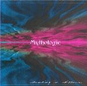

| Artist: | Mythologic |
| Title: | Standing In Stillness |
| Label: | PMM 0600 |
| Length(s): | 41 minutes |
| Year(s) of release: | 2003 |
| Month of review: | [08/2003] |
| 1) | Magic To Breathe | 1.20 |
| 2) | In Solitude | 6.21 |
| 3) | Standing In Stillness | 5.40 |
| 4) | Battled Beliefs | 5.29 |
| 5) | A Dim Too Dark | 9.41 |
| 6) | Flash Of Red | 5.24 |
| 7) | Truth Undiscovered | 6.59 |
Standing In Stillness opens even heavier, but the vocal parts take the power out of the music somewhat. The double vocal lines do make the sound more hectic, I actually prefer to get a few more power chords. Although I can imagine people wanting to have vocals on songs, I am not sure I like to have them here. Okay forty minutes full of instrumental heaviness and complexity can be quite demanding, but I prefer to hear something like the instrumental mid section of this song (albeit a bit meandering), then the vocal melodies, which do little for me. It sounds to me like a load of lyrics has to be sung, and would enjoy a bit more distinction and feeling.
The song Battled Beliefs continues in the same line, but this time we get some good vocal material in the chorus including some nice Kashmir (Led Zep song, not the band) like riffs. I do get the impression that Melissa sings a bit lower than she should, and in other cases she ends up quite a bit higher. The guitar is fast and furious and good too. The volume winds down later in the track, but the vocal lines keep the spectrum filled. A bit of relaxation might have done the listener some good. Some angular guitar lines wind the song down.
We are halfway when we enter the longest track on the album, A Dim Too Dark. Opening with acoustic guitar and a bit of breathing space, I am not sure why the vocals continue to be doubled (one high and one low). One is usually enough. I do get the impression the band is trying to overdo it. The drive comes in when the guitar sets in, alternated with some more atmospheric playing. The instrumental interlude is classically structured. Some of the higher vocals might remind some of the current goth metal acts. The guitar rocks again at the end and the vocal conclusion is a bit more epic and melodic (before they wind down). Good.
Flash Of Red brings us more of the same, from the hectic to the bombastic, very flashy. No questions askd, no prisoners taken. Truth Undiscovered is the closer, it opens with bass and acoustic guitar. There is a tendency to do that, but it does tend to sound the same in whatever song they use it. Maybe some quiet keyboards for variation next time. Best part about this one are the guitar lines slightly past halfway. Great percussively played guitar with melody to boot.